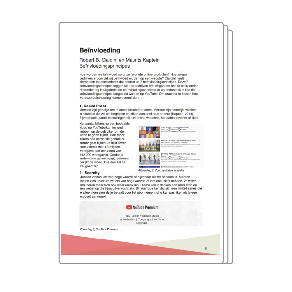
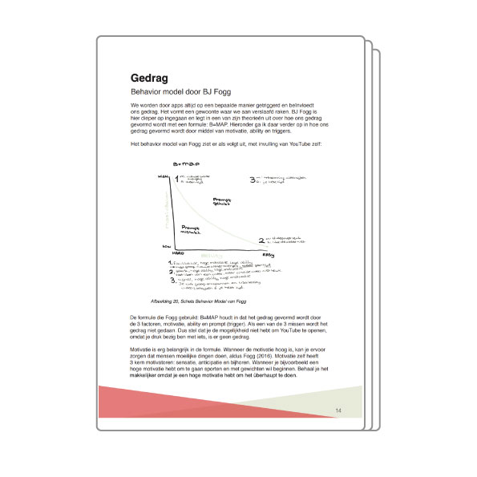
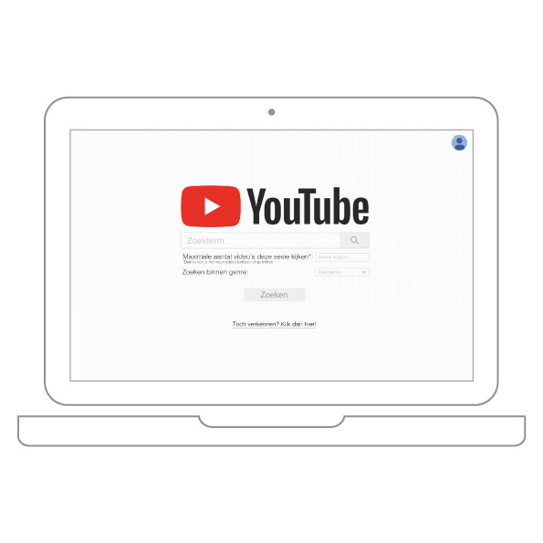
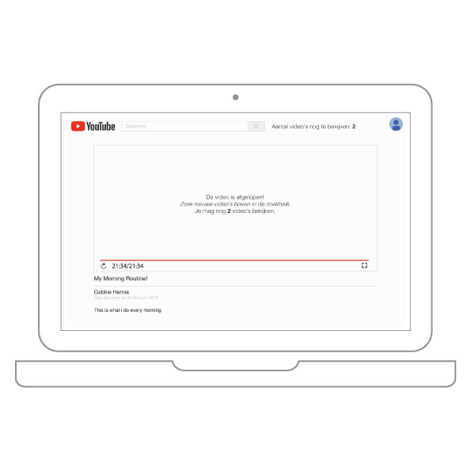
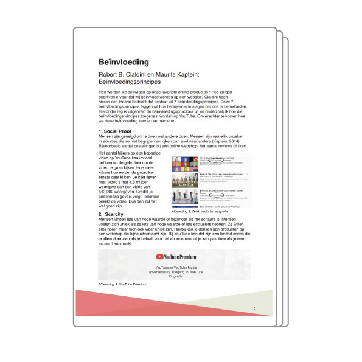
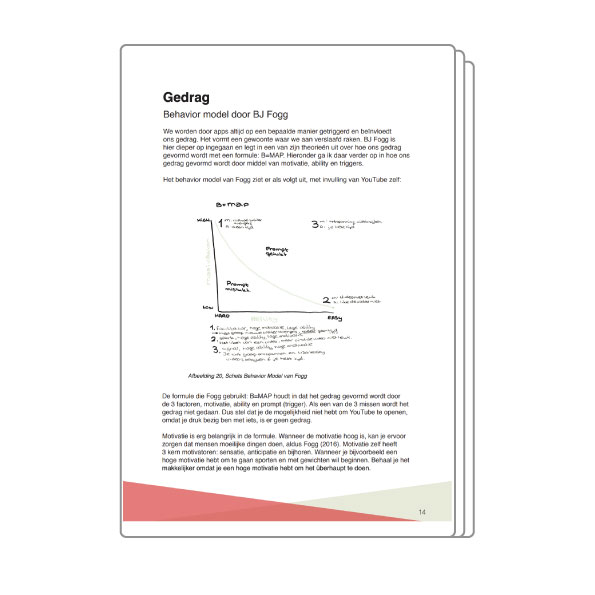
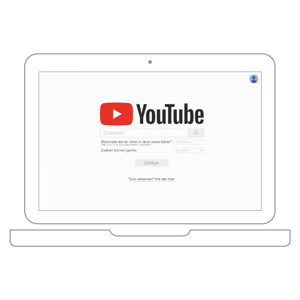
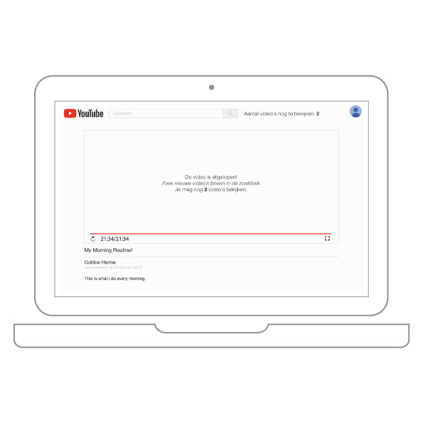

❮
❯
Waarom kijken we? | YouTube
Maatschappij en interactie
Maart 2019
De theorie did ik leerde paste ik toe in mijn eigen case, YouTube. Hierbij leerde ik over persuasion online. Ik had nooit door dat er veel trucjes zijn waardoor je verslaafd bent aan een app. Daarom staat deze ook tussen mijn portfolio. Omdat ik het gewoon heel leuk vond om over te leren. Ook om dan een herontwerp te maken zodat je minder tijd verliest op de app. Voor een bonuspunt heb ik zelf ook nog geprobeerd mijn schermtijd te verminderen en daar sta je dan wel bij stil. Je vind de case hier. En het herontwerp hier.